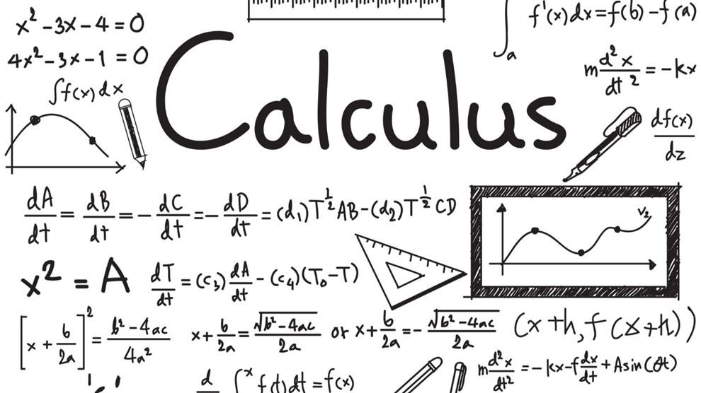
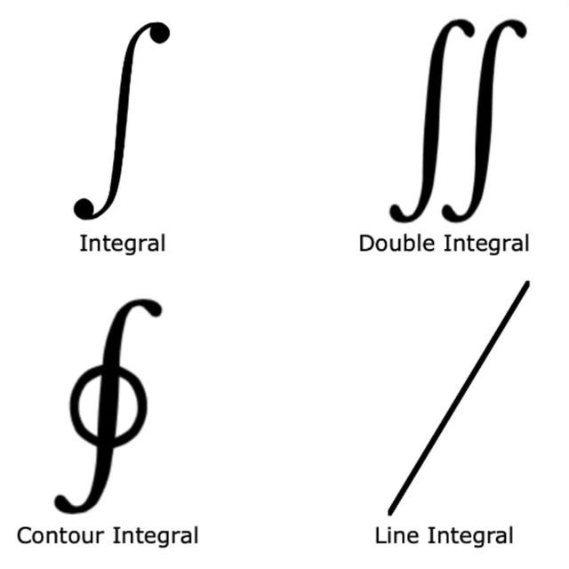
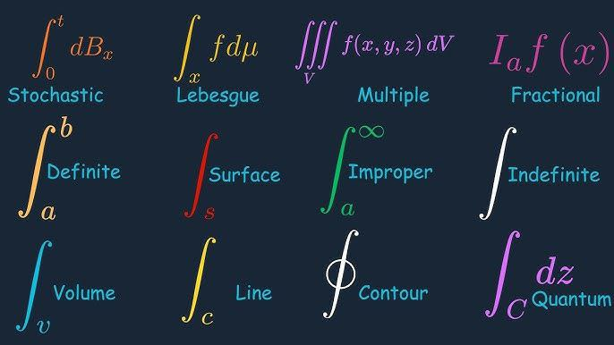

Gottfried Wilhelm Leibniz: The Calculus Lab
"Nature does not make leaps."
Mathematical Visualizations


- The Derivative
- Represented by Leibniz as dy/dx, showing the rate of change.
- The Integral
- The symbol ∫ was chosen by Leibniz as an elongated "S" for "summa."
Derivative Cheat Sheet
Standard Leibniz Notation
| Function f(x) |
Differentiation |
Result |
| xn |
d/dx [xn] |
nxn-1 |
| sin(x) |
d/dx [sin(x)] |
cos(x) |
| ex |
d/dx [ex] |
ex |
Integration Categories

- Definite: Area under the curve between two points.
- Indefinite: The general form of the antiderivative (+ C).
Infinite Limit Visualizer
Watch the value of 1/x as x approaches ∞:
Current Result: 1.0000
System Performance
Data provided by MA.
Source: Leibniz, G. W. (1684) "Nova Methodus"